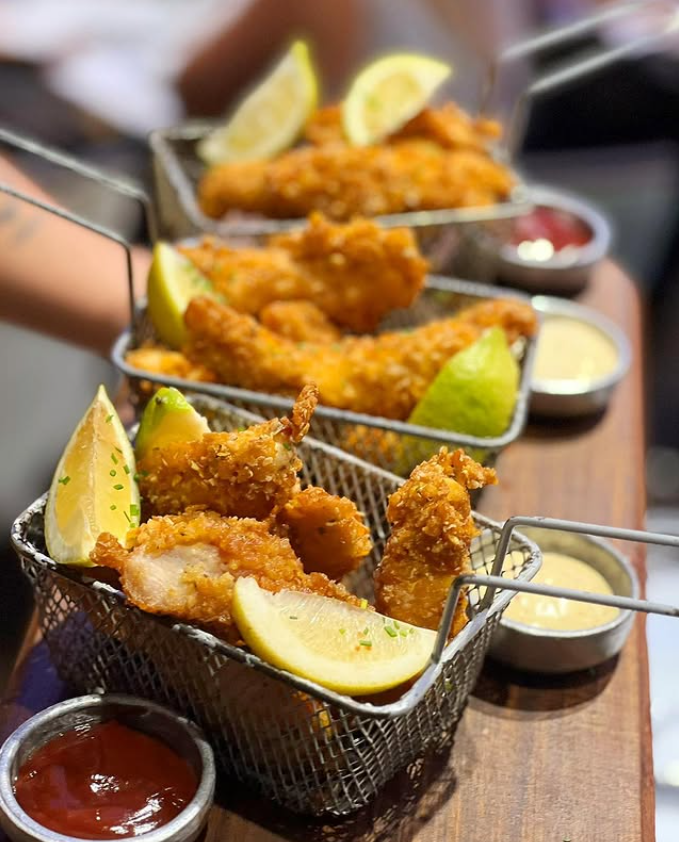

CHICKEN FINGERS
Tiras de pollo marinadas, rebozadas con panko crujiente y fritas al dorado perfecto. Servidas en canastitas con limón fresco y nuestras tres salsas: honey mustard, barbacoa y alioli de ajo.
Una entrada que combina lo clásico con un toque moderno, ideal para abrir el apetito compartiendo.
MARIDAJE SUGERIDO:
Cerveza rubia artesanal o limonada con jengibre.
